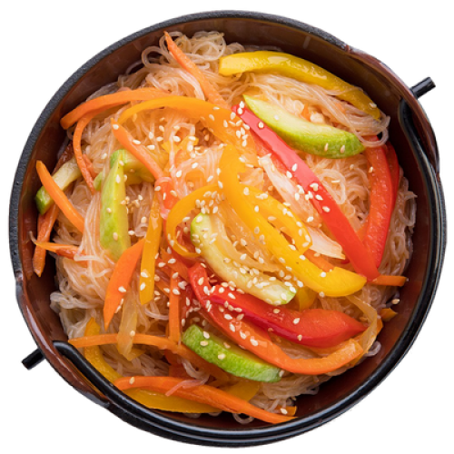
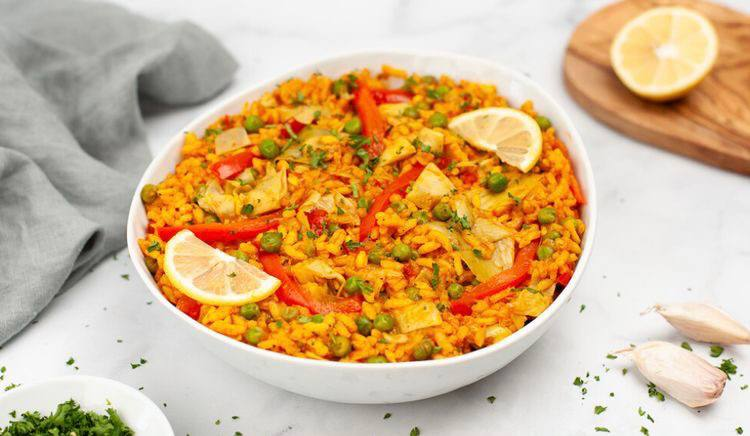
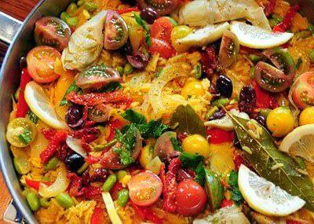
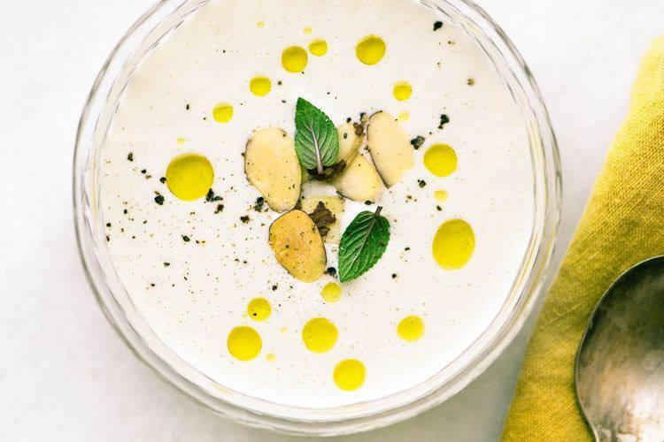
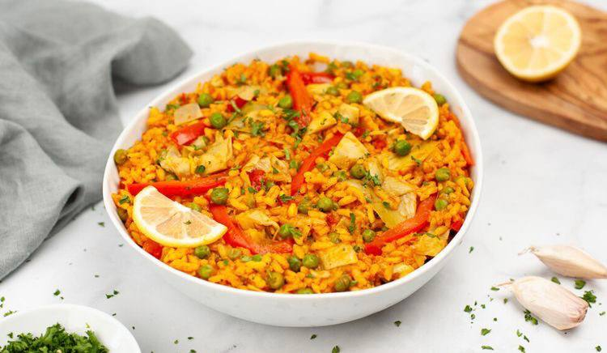
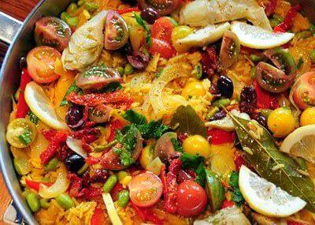
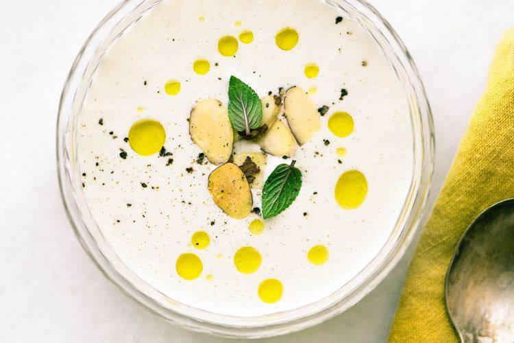

Паэлья
Овощное пате
Зелёный госпачо
Овощные оладьи
Картофельные бисквиты
Миндальный суп
Апельсиновый манник
Суп Карри

Шарлотка
Морковные котлетки
Ингредиенты к рецепту:
200 г свежей спаржи
петрушка (зелень)
700 мл овощного бульона
чеснок – 2 зубчика
оливковое масло – 3 ст. л.
150 г зеленого горошка
200 г зеленой стручковой фасоли
2 сладких перца разных цветов
помидор среднего размера
лук репчатый – 1 луковица
щепотка шафрана
300 г риса
соль
Приготовление блюда по рецепту:
Шаг 1. Шафран замочить в 1 ст. л. воды. Лук, чеснок, перцы и помидоры подготовить. Фасоль, горошек и спаржу вымыть и обсушить. Раскалить большую сковороду. Добавить 2 ст. л. оливкового масла, лук, чеснок и сладкий перец. Обжаривать, периодически помешивая, 4 мин. Добавить оставшееся масло и рис. Быстро перемешать. Готовить 2 минуты.
Шаг 2. Положить в сковороду помидоры и шафран вместе с водой, в которой он замачивался. Перемешать и тушить 2 мин. Влить овощной бульон, довести до кипения, уменьшить огонь до среднего и готовить без крышки, не перемешивая, 12 мин., пока вся жидкость не впитается.
Шаг 3. Добавить фасоль, готовить 7 мин. Положить горошек и спаржу, готовить еще 4 мин. Снять с огня. Посыпать зеленью петрушки, украсить ломтиками лимона.
Ингредиенты к рецепту:
0,25 стакана мелко нарубленного зеленого лука
крахмал
2 больших лука-порея
1 пучок шпината
150 г зеленой стручковой фасоли
2 ст. л. мелко нарубленного укропа
масло сливочное – 2 ст.л.
1 стакан отварного длиннозерного риса
яйцо – 4 шт
1,5 стакана сливок жирностью 20%
соль
1 ст. л. карри
4 большие моркови
Приготовление блюда по рецепту:
Шаг 1. Порей почистить, оставив 2 см зеленой части, порезать его вдоль и промыть. Морковь очистить, порезать тонкими ломтиками. У кресс-салата удалить все длинные стебли. Фасоль порезать на кусочки длиной 0,5 см.
Шаг 2. Порей поварить в кипящей воде 4 мин., вынуть, ополоснуть холодной водой и обсушить.
Шаг 3. Смазать дно и края прямоугольной формы для кекса 1 ст. л. масла и выложить ее кусочками порея поперек.
Шаг 4. Оставшуюся ложку масла растопить в сковороде, добавить карри, морковь, потушить ее до мягкости, 8 мин., выложить в отдельную миску.
Шаг 5. Убрать у шпината все длинные стебли и тушить его в той же сковороде 2 мин. Откинуть на сито и отжать.
Шаг 6. Фасоль отварить в кипящей воде до мягкости, 4 мин., откинуть на дуршлаг и высушить.
Шаг 7. Смешать морковь, шпинат, фасоль, рис, зеленый лук и укроп, приправить солью и перцем. Добавить крахмал, встряхнуть миску, чтобы он равномерно покрыл овощи.
Шаг 8. Яйца слегка взбить со сливками, влить в овощную смесь, перемешать и влить в форму с луком-пореем.
Шаг 9. В глубокий большой противень налить горячей воды, так чтобы ее уровень составлял 2–3 см. Поставить форму на противень. Запекать пате в духовке, предварительно разогретой до 190 градусов, до тех пор, пока его поверхность не станет сухой и твердой на ощупь, 1 ч 10 мин.
Шаг 10. Остудить пате в течение 2 ч, перевернуть на блюдо, закрыть пленкой и оставить на несколько часов.
Ингредиенты к рецепту:
0,5 зеленого болгарского перца
2 больших огурца
1 вареная картофелина
чеснок – 4 зубчика
яйцо – 1 шт
1 кисть белого винограда без косточек
1 маленький перец чили (по желанию)
лук зеленый – 1 пучок
1,5 стакана сока из белого винограда
2 стебля сельдерея
Приготовление блюда по рецепту:
Шаг 1. Огурцы очистить от кожи, крупно порубить. Так же порубить оба перца, сельдерей, зеленый лук, очищенные картошку и чеснок.
Шаг 2. Положить овощи в блендер, влить виноградный сок и смолоть так, чтобы получилось не слишком однородное пюре.
Шаг 3. Взбить яйцо, добавить в блендер вместе с солью и перцем; еще раз взбить все вместе.
Шаг 4. Поставить суп в холодильник на 2–3 ч.
Ингредиенты к рецепту:
мука – 100 г
сахар – 2 ч.л.
500 г моркови
500 г шпината
соль
разрыхлитель
молоко
масло растительное – 4 ст.л.
яйца – 2 шт
Приготовление блюда по рецепту:
Шаг 1. Морковь очистить. Вскипятить в кастрюле чуть подсоленную воду. Опустить в нее морковь и варить 3 мин. Откинуть на дуршлаг и дать остыть.
Шаг 2. Натереть морковь на крупной терке.
Шаг 3. Шпинат перебрать и вымыть. Опустить в кипящую чуть подсоленную воду на 1 мин. Отбросить на дуршлаг и обдать ледяной водой.
Шаг 4. Измельчить шпинат в блендере до состояния пюре.
Шаг 5. Переложить овощи в отдельные миски. Добавить в каждую по 1 яйцу, 1 ч. л. сахара, 50 г муки, чуть подсолить и тщательно перемешать. Не прекращая перемешивать, влить в каждую миску тонкой струйкой по 75 мл молока. Смесь по консистенции должна напоминать сметану.
Шаг 6. Сильно нагреть сковороду. Налить растительное масло. Выкладывать на сковороду овощную смесь из расчета 1 ст. л. на 1 оладушек. Готовить 1 мин. Перевернуть оладьи на другую сторону и обжаривать еще 1 мин. Переложить готовые оладьи в блюдо, накрыть и оставить в теплом месте.
Ингредиенты к рецепту:
яйцо крупное – 3 шт.
молоко – 200 мл
сметана
1 кг картофеля
400 г шпината
2 ст. л. томатной пасты
сахар – 1 ст.л.
Приготовление блюда по рецепту:
Шаг 1. Картофель отварить в мундире, очистить. Растолочь в пюре, добавить молоко, сметану и яйца, перемешать. Разделить пюре на 3 равные части.
Шаг 2. Шпинат опустить в кипящую воду на 2 мин., затем откинуть на сито и протереть. В одну часть картофельного пюре добавить шпинат, во вторую – томатную пасту и сахар.
Шаг 3. Разогреть духовку до 180ºС. Выложить 3 вида пюре в 3 кулинарных мешка с широкой насадкой. Уложить в форму для запекания красивыми волнами. Запекать 8–10 мин. Сразу же подать к столу.
Ингредиенты к рецепту:
желтки яичные – 3 шт.
18 крупных ягод винограда
сахар – 2 ст.л.
3 ст. л. белого вина
чеснок – 3 зубчика
100 г белого хлеба
300 мл ледяной воды
100 г миндаля
6 ст. л. оливкового масла
Приготовление блюда по рецепту:
Шаг 1. Миндаль опустить в кипящую воду на 3 мин. Отбросить на дуршлаг, дать немного остыть. Снять с ядер кожицу, подсушить их на раскаленной сковороде 2 мин.
Шаг 2. Положить в чашу блендера миндаль, очищенный чеснок и хлеб без корки. Размолоть до крошек. Добавить вино, масло, желтки, сахар и взбить в однородную массу.
Шаг 3. Не прекращая взбивать, влить ледяную воду. Перелить в супницу и поставить в холодильник на 30 мин. Виноград вымыть, дать обсохнуть. Каждую ягоду разрезать пополам и удалить косточки. Разлить суп по тарелкам, добавить виноград.
Ингредиенты к рецепту:
сок апельсиновый свежевыжатый 300 мл
масло подсолнечное 100 мл
крупа манная 200-250 г
сахар кокосовый или сироп топинамбура или мёд по вкусу
цедра апельсина 1 ч.л
сода 1 ч.л
ванилин 1-2 капли
Приготовление блюда по рецепту:
Шаг 1. В глубокую миску наливаем апельсиновый сок, масло и добавляем подсластитель. Хорошо перемешиваем погружным блендером (можно использовать стационарный блендер).
Шаг 2. Добавляем ванилин и апельсиновую цедру. Хорошо перемешиваем ложкой.
Шаг 3. Постепенно всыпаем манку, постоянно помешивая ложкой, чтобы не было комочков. Консистенция теста не должна быть слишком густой, чтобы манник не получился сухим. Оставляем на 5 минут, чтобы манка немного набухла.
Шаг 4. К тесту добавляем 1 чайную ложку соды и быстро перемешиваем. Тесто начнёт активно пузыриться и увеличиваться в размере. Это нормально: идёт реакция соды с соком. Сразу перекладываем тесто в форму и отправляем в заранее разогретую до 180 градусов духовку. Либо можно использовать маленькие формы для кексов.
Шаг 5. Затем влить сахарно-яичную смесь и тщательно смешать с шоколадной массой. Цвет у теста должен получиться равномерным, без разводов.
Шаг 6. Выпекать до готовности – можно проверить зубочисткой (она должна оставаться сухой).
Ингредиенты к рецепту:
картофель 4 шт
морковь 2 шт
огурец солёный 4 шт
кефир 300 мл
карри 1 ч.л
масло гхи 1 ч.л
вода 500 мл
масло растительное 2 ст.л
Приготовление блюда по рецепту:
Шаг 1. Морковь почистить и натереть на средней тёрке. Картофель почистить и нарезать средними кубиками. Огурцы нарезать кубиками среднего размера.
Шаг 2. Ставим сковороду на медленный огонь, добавляем масло гхи и растительное, добавляем карри, перемешиваем с маслом и добавляем морковь. Тушим 5-7 минут до полуготовности моркови.
Шаг 3. В кастрюлю положить картофель, добавить 500мл воды и поставить вариться. Через 15 минут добавить в кастрюлю тушёную морковь, через 5 минут добавить огурцы.
Шаг 4. Подождать, пока суп закипит, добавить кефир, перемешать и убрать с огня.
Ингредиенты к рецепту:
яблоко 500 г
ряженка 500 мл
крупа манная 1,5 стак
мука пшеничная 1 стак
сода 1 ч.л
сахар белый 1 стак
корица по вкусу
гвоздика по вкусу
масло растительное 3-4 ст.л
Приготовление блюда по рецепту:
Шаг 1. В миске смешиваем ряженку или домашнюю простоквашу с манкой, сахаром и растительным маслом (ложечку оставим, чтобы смазать листик) и оставляем в покое на то время, пока занимаемся яблоками, пусть пока манка разбухнет.
Шаг 2. Почистим яблоки от семян. Чистить или нет кожицу — на ваше усмотрение. У меня была падалица, и я убрала кожуру. Смазываем лист растительным маслом, я пользуюсь горчичным, но подойдёт и подсолнечное. Раскладываем порезанные яблоки.
Шаг 3. Добавляем в миску соду и специи, тщательно перемешиваем, пронаблюдаем реакцию соды на кисломолочный продукт и добавим муку. Количество муки варьируйте, так как она бывает разная, тесто наше должно получиться как густая сметана. Ну и заливаем тестом яблочки.
Шаг 4. Ставим в духовку на 30 минут, духовку можно прогреть заранее, выпекаем при температуре 180 градусов.
Ингредиенты к рецепту:
морковь 300 г
апельсин 1 шт.
крупа манная 3 ст.л.
корица 1 ч.л.
гвоздика 1 шт.
мускатный орех 1/2 ч.л.
масло сливочное топлёное 1 ст.л.
соль 1/4 ч.л.
масло подсолнечное по вкусу
Приготовление блюда по рецепту:
Шаг 1. Трем на мелкой терке всю морковь, натираем цедру с одного апельсина, с него же выжимаем сок.
Шаг 2. Растапливаем топленое масло и на нем начинаем обжаривать морковь в течение пары минут активно помешивая, добавляем гвоздичку, корицу, мускатный орех, соль, сок апельсина, прогреваем, насыпаем манку и тушим все до готовности морковки.
Шаг 3. Снимаем с огня, немного остужаем и начинаем лепить котлетки.
Шаг 4. Обжариваем до румяной корочки.
Yummy day
рецепты для всей семьи
Паэлья
Овощное пате
Зелёный госпачо
Овощные оладьи
Картофельные бисквиты
Миндальный суп
Апельсиновый манник
Суп Карри
Шарлотка
Морковные котлетки
P.S. With love to you